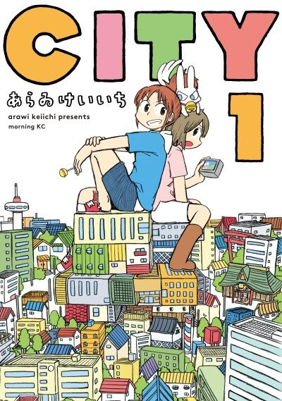

Anime
Anime
Manga2025 · Comedy, Slice of Life
CITY THE ANIMATION
CITY THE ANIMATION
AniList8.0
Animeter—
Episodes13 ep
MangaUnclear
Is it worth pushing through?
Built from what visitors report across all 13 episodes.
Loading reports…Checking what other people said about this one.
Sign in with your email at the top of the page to add your report.